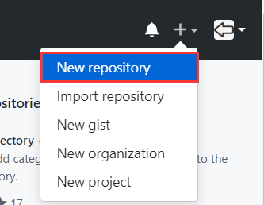
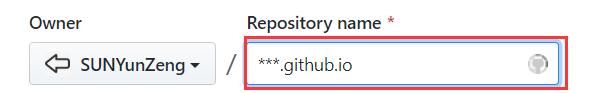
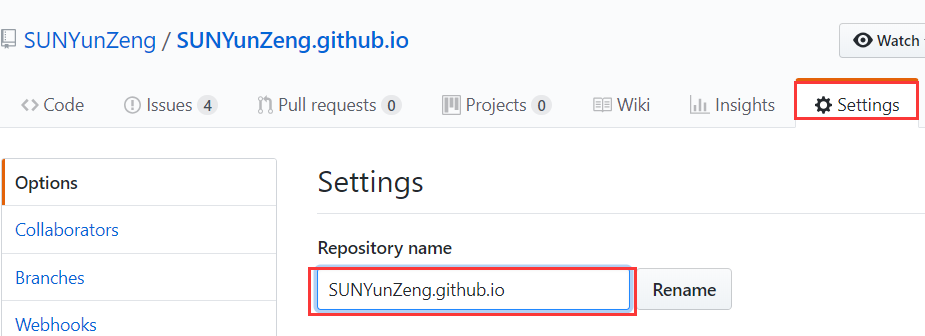
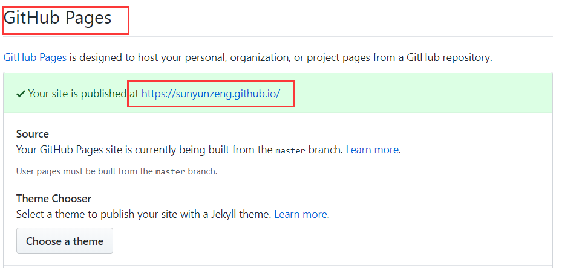

前言
你是否也想拥有属于自己的博客？是否也想拥有跟我一样的博客空间？如果心动了，就赶紧往下看吧！
教程炒鸡简单，炒鸡详细，而且博客搭建完全是Free of Charge!
原理
Github Pages
Github不仅可以让我们把代码托管在平台上，而且允许我们利用Github的服务器部署自定义网页对我们的项目作简介。这个网页就被称为
Github Pages。这是我们可以利用Github搭建免费博客的基础啦~
Hexo
Hexo是一款轻量但高逼格的搭建博客快速工具，它是基于Node.js开发的。而Node.js…好了，扯远了…有兴趣的童鞋可以出门左转自己百度…
准备
知道了大致的原理，我们首先需要准备搭建博客的材料。如下：
1. 一台windows系统的电脑
2. 一个Github账号
3. 安装Node.js
4. 安装Git
5. 安装Hexo
开始
1. 申请Github账号，建立一个仓库，并为此创建一个说明网页(Github Pages)
假设我们都有了Github账号，这是首先在右上角点击“+”号，选择New repository

注意 仓库名一定是”你的Github用户名”+github.io !!!

之后为我们的项目添加一个说明Pages！
建好的项目顶部最右边有个Setting按钮，点击进入配置界面，下滑界面，直到看到Github Pages，这时你发现竟然自动生成了一个说明网页！
因为Github说明网页的默认地址就是“你的Github用户名”+github.io，其它说明网页都是基于该地址的。


Ok! 到此为止，Gihub Pages的部分就结束了。
2. 搭建Hexo，把Github Pages修改为自己的博客界面！
1 | [简书](http://jianshu.com) |